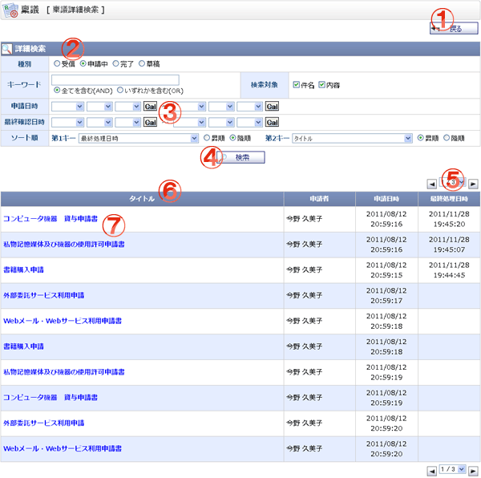

稟議の詳細検索を行う画面です。

機能説明
戻るボタン遷移元の画面へ遷移します。 |
種別選択した種別により検索条件の入力可/不可を切り替えます。 |
|---|---|
カレンダーボタンポップアップでカレンダー画面が開きます。 |
検索ボタン入力された検索条件で検索を行い結果を表示します。 |
ページコンボ・前頁・次頁ページコンボで任意のページへ、前頁アイコンクリックで前のページへ、次頁アイコンクリックで次のページへそれぞれ遷移します。 |
ヘッダタイトルクリックによって一覧のソート条件の切り替えを行います。現在ソート条件になっている項目をもう１度クリックすると「昇順」「降順」が切り替わります。 |
稟議内容稟議のタイトル、申請者、申請日時、最終処理日時、作成日時を表示します。未読の稟議は赤、既読の稟議は青の文字で表示されます。 |
表示・入力項目説明
種別
稟議の種別を選択します。
キーワード
件名または内容の検索に使用するキーワードを入力します。
検索対象
キーワード検索の範囲を選択します。
申請日時
申請日時を選択します。(種別 = 草稿の場合は入力不可)
最終確認日時
最終処理日時を選択します。(種別 = 受信、草稿の場合は入力不可)
ソート順
第1キーと、第2キーを指定できます。それぞれのソート順について、昇順、降順の設定ができます。
検索結果のタイトルと連動しています。